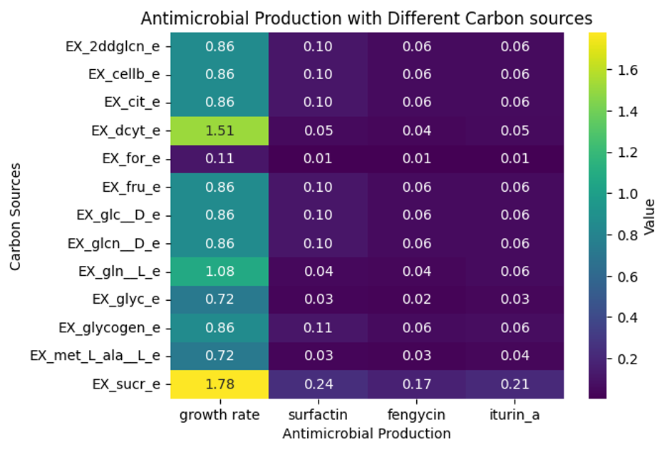
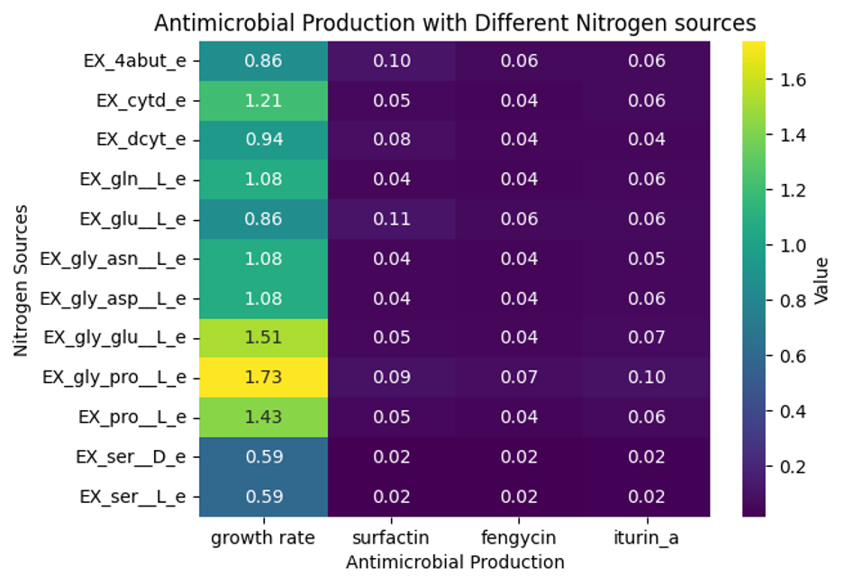

The investigation of complex interactions within a soil microbiome is instrumental for enhancing agricultural practices by elucidating microbial contributions to soil fertility and plant health. This project reconstructed the Model of Metabolism and Gene Expression (ME-model) for a Bacillus soil isolate from its genome-scale metabolic model (M-model) through a semi-automated pipeline. We found out the optimal nutritional combinations that maximize biomass and important antimicrobial compounds in terms of carbon sources, nitrogen sources. This detailed profiling of this isolate sheds light on its ecological niche and informs future studies of the complex interactions that define its native soil microbiome.
Background
What is a ME-Model?
- Genome-Scale Metabolic Model (M-model): Mathematical representation of an organism's genomic sequence and metabolic pathways to simulate complex living systems1
- ME-model (Model of Metabolism and Gene Expression): Enhanced model that includes gene expression machinery (RNA polymerase, ribosomes, tRNA) and models transcription and translation processes for more accurate metabolic activity predictions2
About Bacillus
Bacillus is a genus of Gram-positive, rod-shaped bacteria. The most famous species, Bacillus subtilis, is a well-studied model organism and one of the bacterial champions in secreted enzyme production for industrial applications.
Methodology
To reconstruct a ME-model for the target Bacillus organism, we employed a semi-automated reconstruction pipeline which includes algorithms to generate a draft ME-model at the beginning. Specifically, the algorithm reads the given M-model and a genome sequence and annotation file to map transcriptional and translational relationships and then transfers missing essential components (e.g. genes, reactions, metabolic pathways, and enzymes) from the ME-model of a reference organism. A draft ME-model that profiles the genome, metabolism, transcriptome, and proteome of the target organism is then generated with potential gaps identified. At this step, 80%-90% of gene functions are integrated into the model, and the remaining gaps or mis-included components are left for manual curation. The manual curation process constituted approximately 70% of the project timeline.
Manual Curation Process
- Run the current model to check growth rates, energy production, and metabolic pathways until all of them reflect known capabilities and experimental values from literature
- Identify potential causes for the breaking points of the model, especially missing genes, reactions, metabolic pathways, and enzymes and placeholder components transferred from the reference model highlighted by the algorithm
- Cross-reference these problem-causing candidates with databases to determine if any reactions, pathways, and genes should be added or removed to fix the current problems
- Edit the identified problematic components accordingly
Experimental Design
With the curated ME-model, we ran simulations to acquire predictions of optimal growth rates, resource utilization, and antimicrobial production under a range of nutritional environments to determine the ecological niche of this Bacillus soil isolate.
Optimization Objectives
The simulations were designed to maximize the following cellular functions:
- Biomass production (growth rate)
- Antimicrobial compound synthesis:
- Surfactin: Amphiphilic lipopeptide that destabilizes cell membranes5
- Fengycin: Lipopeptide complex with antifungal activity against filamentous fungi6
- Iturin: Broad-spectrum antibacterial lipopeptide secreted in the plant rhizosphere6
Environmental Variables
To comprehensively characterize the isolate's metabolic capabilities, we systematically tested:
- Carbon sources: 215 different compounds
- Nitrogen sources: 132 different compounds
- Oxygen availability: Aerobic versus anaerobic conditions
Results
Carbon Source Analysis

Key finding: Sucrose (C₁₂H₂₂O₁₁) showed highest performance with growth rate of 1.78 and significant antimicrobial production for all three compounds.
Nitrogen Source Analysis

Key finding: Gly-L-Pro (C₇H₁₂N₂O₃) demonstrated optimal performance with growth rate of 1.73 and balanced antimicrobial compound production.
Conclusions
The Bacillus soil isolate achieves maximum growth rate and antimicrobial production under aerobic conditions with sucrose (C₁₂H₂₂O₁₁) as the carbon source and Gly-L-Pro (C₇H₁₂N₂O₃) as the nitrogen source. These findings provide a computational framework for understanding this isolate's ecological niche and potential applications in biotechnology and agricultural biocontrol.
Applications
This detailed metabolic characterization enables optimized production of antimicrobial compounds for biotechnology applications, enhances understanding of plant-beneficial bacteria for agricultural biocontrol, provides a framework for studying complex microbial interactions in soil microbiome research, and supports optimization of Bacillus cultivation conditions for industrial enzyme production.
References
- Gu, C., Kim, G.B., Kim, W.J., Kim, H.U., & Lee, S.Y. (2019). Current status and applications of genome-scale metabolic models. Genome Biology, 20(1), 121.
- Lloyd, C. J., Ebrahim, A., Yang, L., King, Z. A., Catoiu, E., O'Brien, E. J., Liu, J. K., & Palsson, B. O. (2018). COBRAme: A computational framework for genome-scale models of metabolism and gene expression. PLoS Computational Biology, 14(7), e1006302.
- Overview of the COBRAme ME-model formulation. ResearchGate (Figure).
- Bacillus. Wikipedia, The Free Encyclopedia.
- Zhen, C., Ge, X.-F., Lu, Y.-T., & Liu, W.-Z. (2023). Chemical structure, properties and potential applications of surfactin, as well as advanced strategies for improving its microbial production. AIMS Microbiology, 9(2), 195-217.
- Xiao, J., Guo, X., Qiao, X., Zhang, X., Chen, X., & Zhang, D. (2021). Activity of Fengycin and Iturin A Isolated From Bacillus subtilis Z-14 on Gaeumannomyces graminis Var. tritici and Soil Microbial Diversity. Frontiers in Microbiology, 12, 682437.